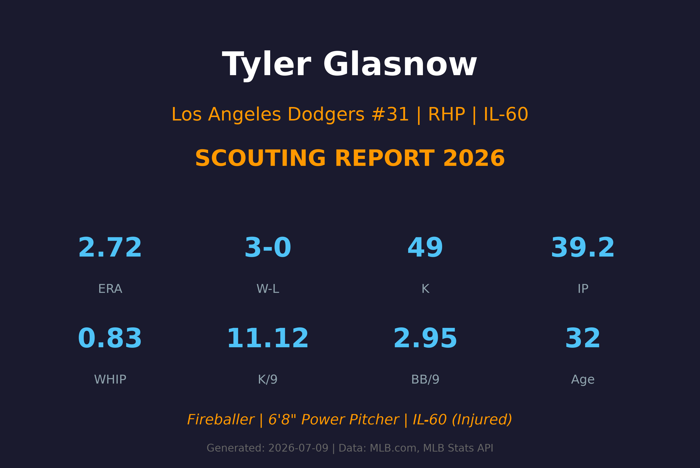
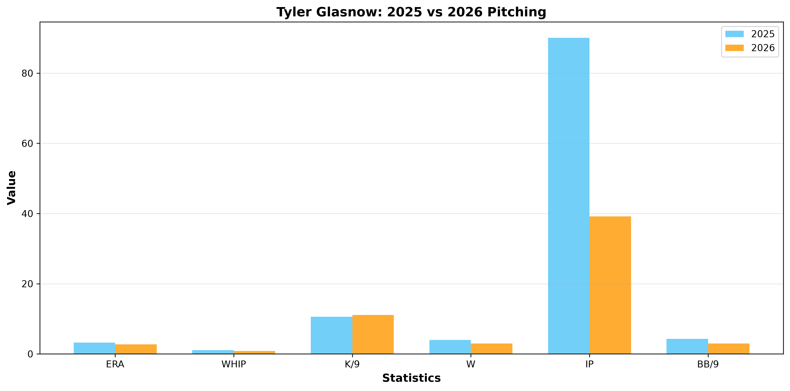
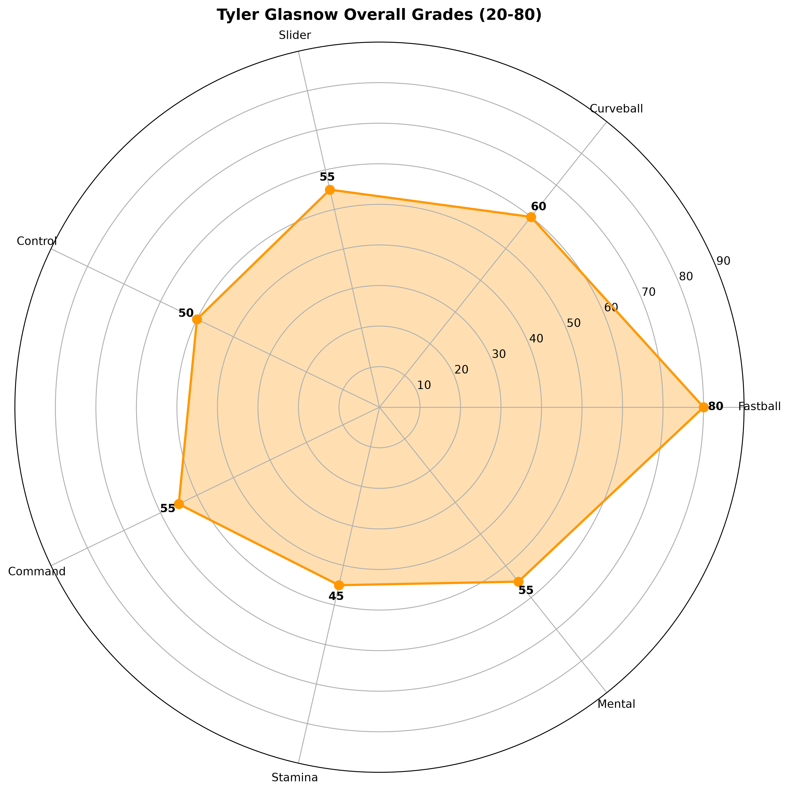

Los Angeles Dodgers #31 | RHP | 6'8" Fireballer

Tyler Glasnow 是联盟中最具天赋的火球手之一，身高6'8"（203cm）的他是MLB身材最高的投手之一。速球可达100mph+，搭配极具杀伤力的曲球，让他在健康时拥有赛扬奖级别的压制力。
然而，Glasnow 的职业生涯一直被伤病困扰。肘部手术、斜腹肌伤、肩部不适等问题让他难以维持完整的赛季。2026年他只投了7场先发（39.2局）就再次进入伤病名单。
2024年从光芒队交易到道奇队后，Glasnow 在有限的健康时间内展现了顶级表现。2026年虽然样本很小，但ERA 2.72和WHIP 0.83都显示他在健康时依然是联盟顶级投手。

| 赛季 | GS | W-L | ERA | IP | K | BB | WHIP | K/9 | BB/9 |
|---|---|---|---|---|---|---|---|---|---|
| 2025 | 18 | 4-3 | 3.19 | 90.1 | 106 | 43 | 1.10 | 10.56 | 4.28 |
| 2026 | 7 | 3-0 | 2.72 | 39.2 | 49 | 13 | 0.83 | 11.12 | 2.95 |
98-100 mph (最高102+)
Glasnow的招牌武器。6'8"身高带来极长的出手距离，使得打者看到的球速比实际更快。速球上旋强烈，产生明显上升效应。这是他压制对手的核心武器。
A+ 评分
80-83 mph
Glasnow的次要武器。曲球下坠幅度大，旋转效率极高。与速球形成近20mph的速度差，是主要的出局球种。当曲球状态好时，Glasnow几乎不可击中。
B+ 评分
86-89 mph
介于速球和曲球之间的变化球。横向位移明显，对右打者特别有效。Glasnow的滑球品质不稳定，但在状态好时能够制造大量挥空。
B 评分
90-92 mph
偶尔使用的变化球，速度接近速球但带有下坠。使用频率较低，主要用于打乱左打者的节奏。Glasnow对变速球的控制力仍在开发中。
C+ 评分
Glasnow 采用over-the-top（正上方）的投球机制，6'8"的身高让他的出手点极高，投球轨迹陡峭。这种机制增加了打者的视觉难度，但也给身体带来较大压力，可能是他伤病频发的原因之一。投球动作较为费力，需要大量体能支撑。
Glasnow 的速球是联盟顶级水准。平均约99mph，最高可达102-103mph。根据Statcast数据，他的速球旋转速率位于联盟前5%。6'8"身高带来的释放点延长效应（延展）使得打者反应时间更短。这是他能够维持高K/9（11.12）的核心原因。
Glasnow 的最大弱点是控球。2025年BB/9高达4.28，虽然2026年改善至2.95（小样本），但生涯BB/9始终在3.5-4.5之间徘徊。高保送率导致他的投球局数受限，经常提前下场。改善控球是他能否成为真正王牌的关键。

天赋顶级，但伤病限制了上限
B+ 级 / 天赋型投手（健康时A级）
Tyler Glasnow 的最大问题是健康。2026年进入IL-60意味着他很可能赛季报销。虽然他在有限的健康时间内展现了顶级表现（ERA 2.72，WHIP 0.83），但7场先发的样本太小，不足以判断他是否真的克服了控球问题。
Glasnow 已经32岁，且有着丰富的伤病史（肘部手术、斜腹肌、腿后肌等）。道奇队在2024年用大量筹码交易得到他，并签下大合约，但回报并不稳定。2026年的IL-60是他职业生涯的又一次重大挫折。
2026（剩余赛季）：预计赛季报销，专注于康复
2027：如果健康复出，仍可作为道奇队轮值前段投手，但局数需限制（150-160局）
2028+：年龄和伤病可能导致转型为5-6局的“power starter”，或转向牛棚角色
Tyler Glasnow 出生于美国加州 Newhall。2011年MLB选秀中，他在第5轮被匹兹堡海盗队选中。Glasnow 在海盗队小联盟系统中逐步成长，以火球手的身份闻名。
2016年7月7日，Glasnow 完成MLB首秀。在海盗队期间，他展现了顶级速球天赋，但控球问题严重。2018年，海盗队将他交易至坦帕湾光芒队。
2024年：光芒队将 Glasnow 交易至道奇队（换取 Ryan Pepiot 等）。道奇队随后与他签下4年7500万美元的延长合约。2024年 Glasnow 在道奇队投了22场先发，9-6，ERA 3.49，120K。
2025年：18场先发，4-3，ERA 3.19，但再次因伤缺席部分比赛。
2026年：仅投7场先发（3-0，ERA 2.72）后进入IL-60，预计赛季报销。
Glasnow 的绰号 "Baby Giraffe"（小长颈鹿） 源于他6'8"的瘦长身材和略显笨拙的举止。这个绰号最初由小联盟队友所起，因为他的身材和动作让人联想到长颈鹿。尽管听起来有些调侃，但 Glasnow 本人接受了这个绰号，甚至将其作为自己的品牌标志。